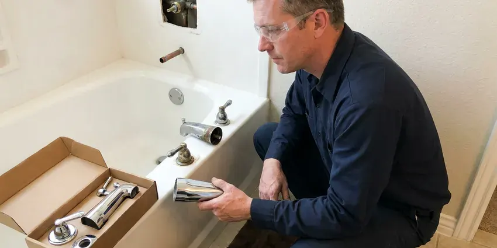

Faucet Repair in Enid, OK
JBK Plumbing repairs kitchen, bath and laundry faucets in Enid, OK, with the common cartridges already on board.
- Nearby Plumbers
- Next-Day Service
- Guaranteed Work
- Genuine Parts

Need a Faucet Repair in Enid, OK?
You approve the price before we take the faucet apart.
Kitchen, Bath and Tub Faucet Repair in Enid, OK
JBK Plumbing fixes faucets that drip, leak at the handle, wobble on the counter or barely trickle, and we use manufacturer cartridges instead of generic parts. Generic cartridges fail early. Using the original brand part keeps the warranty intact.
Work we handle every week:
- Cartridge and stem replacement for Moen, Delta and Pfister
- Sprayer and hose repair for kitchen faucets
- Replace worn cartridges and stems

Additional Bathroom Plumbing Services in Enid, OK
From toilets to showers, our bathroom plumbing team in Enid, OK repairs, installs, and replaces every fixture with clean, code-compliant work.


Customers
Why Choose JBK Plumbing for Faucet Repair in Enid, OK?
Ignoring a dripping faucet leads to mildew in the cabinet, swollen particleboard, warped shelves and stains on the counter around the base. Small leaks cause real damage. Fixing it early costs far less than a new sink base.
- Cost Savings, Stopping drips cuts the water bill and avoids bigger repairs.
- Clear Pricing, You approve a firm price before work starts.
- Prevent Damage, Prompt repairs keep water out of the sink cabinet.
Citywide Coverage
Routes are planned so a plumber is never far from a faucet that will not shut off, even on busy days across the Enid area. Those calls go first. A slow drip can be booked for a time that suits you.
Experienced Team
Plumbers on our team explain repairs in plain words, like why a ball faucet needs new seats and springs or why a scratched disc cannot be resurfaced. No jargon needed. Ask anything while we work.
Safety-First Approach
Permits are not needed for most faucet repairs, but changing supply lines inside the wall or adding a new fixture can bring in local code rules under Oklahoma plumbing standards. We will tell you which case yours is. If a permit is needed, we pull it before work starts.
Trusted Certified Enid Plumbing Services Professionals
At JBK Plumbing, we are proud to offer certified plumbing services throughout Enid, OK. Credentials matter in this trade. Our plumbers hold recognized industry credentials, and they follow strict safety and quality rules on every repair, installation and maintenance call we run.
Call Us Now PHCC Plumbing Contractor Recognition
PHCC Plumbing Contractor Recognition Better Business Bureau (BBB) Accreditation
Better Business Bureau (BBB) Accreditation Angi Certified Pro
Angi Certified Pro ISO 9001 Quality Management Certification
ISO 9001 Quality Management CertificationWhat We Fix on Faucets in Enid, OK
Faucet Handle Repair and Replacement in Enid, OK
Stripped handle splines, cracked handle bodies, worn adapters and loose set screws make a faucet hard to turn or impossible to shut tight. Handles are often sold separately. We match the handle to the stem or cartridge and the finish, and if the stem itself is stripped we replace it at the same time.

Dripping Faucet Solutions in Enid
Every drip has a source, and on a faucet that has dripped for years there is usually more than one worn part. We replace what failed and check the rest. Compression, cartridge, ball and disc faucets all fail differently, so the repair is matched to the valve inside yours.
Faucet Repair Versus Replacement in Enid, OK
A new cartridge usually costs well under the price of a new faucet and can add years of life, as long as the faucet body is sound and parts are still made. A cracked body or discontinued parts change the answer. We give you both prices so the choice is yours.
Cracked Faucet Body Repair in Enid
Cracked faucet bodies, usually from freezing or an old brass casting that finally gave out, cannot be repaired and need a replacement faucet. Shut the stops first. A new faucet can usually go in on the same visit, and we will check the supply lines and stops while the water is off.
Hard Water Faucet Repair in Enid
Scale is the biggest reason faucet seals wear early, because the mineral crust scratches rubber and keeps ceramic discs from closing flat. Hard water speeds it up. We clean the valve body when the old part comes out, so the new cartridge or washer seals against a smooth surface.
Low Water Flow Faucet Repair in Enid
Sputtering flow, where the water spits and surges, often means air or debris in the line after a water main repair, or a partly clogged cartridge screen. A flush of the lines usually fixes it. Pull-down faucets also have check valves in the hose that can stick, and we clean or replace those.
Ball Faucet Repair in Enid, OK
Ball faucets have a single lever over a domed cap, and the drip usually comes from the two small rubber seats and springs that press against the ball. A seats and springs kit fixes most of them. Loose handles happen too. If the handle leaks, snugging the adjusting ring under the cap often fixes it.

Bathroom Pop-Up Drain Repair in Enid
Pop-up drains on bathroom sinks fail at the pivot ball, the clevis strap, the lift rod or the stopper itself, and a slow drain often turns out to be hair wrapped around the stopper. Try lifting out the stopper first. We replace the pop-up assembly in a matching finish when the old one is corroded or the pivot leaks.
Local Faucet Repair in Enid, OK
Searching for faucet repair near me usually means a drip that has gone on long enough to keep you up at night or show up on the water bill. You can get a price range on the phone once you tell us the brand. JBK Plumbing sends plumbers who work in Enid every day.
Phone calls get answered by a person who asks the brand, the number of handles and what the faucet is doing. A photo helps. That lets us price the job before the truck rolls.
JBK Plumbing at a Glance
- Licensed and insured plumbers serving Enid, OK
- Same-day appointments and 24/7 emergency response
- Upfront, flat-rate pricing before work begins
- 4.8-star rated by 318+ Oklahoma customers
Enid Map
Enid Information
- Population
- 50,577
- Area codes
- 580/620/405
- Service area
- Enid and towns within a 40 mile drive
- Nearby
- Stillwater, Edmond, Oklahoma City, Midwest City
Many rural homes rely on private wells, and some groundwater carries high mineral content that benefits from softening or filtration. An early faucet repair in Enid keeps scale from locking up the cartridge and keeps drips out of the sink cabinet.
Expert Services
Call JBK Plumbing for reliable plumbing work done by licensed pros in Enid, OK.
Our Specialized Plumbing Services in Enid, OK
At JBK Plumbing, you get every kind of plumbing service from one company across Enid, OK. We go from leak detection all the way to full system installations, for homes and commercial buildings, and we do it quickly at a fair price. Here are the core services we offer:


What to Expect From a Faucet Repair in Enid, OK
We find the cause, replace the worn part and test it before we leave.
Request a Quote
Call (405) 507-8396 with the brand and what it is doing. You get a price range and a time window.
Diagnose the Faucet
We open the faucet and identify the worn cartridge or seal. You approve a flat price.
Repair and Test
We install the parts, clean the aerator and run hot and cold before we leave.
Frequently Asked Questions About Faucet Repair in Enid
Most repairs cost $125 to $300 with the cartridge or seals and labor included, and complex kitchen or touchless faucet repairs can run $200 to $400. You pay one flat price. It is set before we start.
Over time, yes. Mineral deposits wear cartridges, block aerators and dull the finish, and a water softener plus regular aerator cleaning can add years to a faucet in a hard water home. A vinegar soak loosens aerator scale.
It can. A faucet dripping once a second loses over 3,000 gallons a year, which is roughly the water used in 180 showers and enough to notice on the bill. Replacing the washer or cartridge ends it.
Yes. Our labor is guaranteed, and the parts carry the manufacturer warranty.
Generally no, since cartridge, handle and like-for-like faucet swaps are treated as repairs in most places. Moving supply lines or changing the fixture type is another matter, and the rules for Enid come from the local building department. We check before we start.
We do, including Grohe, Hansgrohe, Brizo and Kohler's higher lines, which often use metric cartridges you will not find at a hardware store. Some parts need ordering. We confirm the cartridge before the visit when we can.
One to two hours at the most for a standard repair with common parts. An ordered part may mean a short second trip. One visit is the goal, and the truck carries enough stock that most repairs never need a second trip to the supply house.
Delta, Moen, Kohler, American Standard and Pfister cover most of what we see in Oklahoma homes, and we stock their common cartridges. We work on other brands as well.
What Our Customers Say About Our Plumbing Experts

Mark T.
The floor drain in our office break room backed up every few weeks. The plumber ran a cable, then put a camera down and found roots at a joint about thirty feet out. Seeing it on the screen made the decision easy.
Drain Cleaning · Norman, OK
Monica A.
Our water bill nearly doubled in one month with no change in how we used water. The tech checked the meter, heard the leak under the hallway with his equipment, and opened a hole about a foot square. Fixed the same day.
Slab Leak Repair · Moore, OK
James P.
Our restaurant had a slow leak at the hand sink that was rotting the cabinet base. JBK Plumbing came in at six in the morning before prep, replaced the trap and both supply lines, and was packed up before my first cook clocked in.
Commercial Plumbing · Stillwater, OK
Daniel K.
A pipe burst in the garage ceiling at 11 at night. Someone answered on the second ring, and the plumber was in my driveway about fifty minutes later. He shut off the main, cut out the split section, and had water back on before 2 am.
Emergency Plumbing · Oklahoma City, OK
Emily R.
The shutoff valve under our kitchen sink snapped off in my hand on a Sunday morning. JBK Plumbing had someone out by early afternoon. He replaced both angle stops with quarter turn valves and showed me where our main shutoff was, which I honestly did not know.
Plumbing Repair · Moore, OKRachel N.
Hard water was leaving white crust on every faucet and our dishwasher was struggling. The tech tested the water, recommended a softener sized for a family of five, and installed it with a bypass valve in one afternoon. The spots on our glasses are gone.
Water Softener · Norman, OK